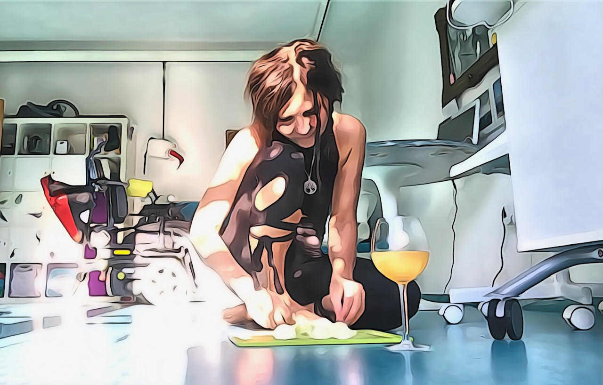

A co teď?
Vždycky se ocitneš tam, kam si došel. K jaké činnosti ses dostal, takovou vykonáváš. Ať si myslíš cokoli, myslíš si právě to, co si myslíš. Jinými slovy:
A co teď?
Vařím. A piju víno… Můj přítel říká, že skoro nejím a skoro nepiju. Má pravdu! Ale vždycky, když se podlévá, podlévám i sebe. Světe div se, oh la la i svíčková se podlévá. Tohle přece nemůžu zkazit. Strčila jsem jí do trouby a jdu se pověsit. Na šálu. Hlavou dolů. Je to zdravý na krevní oběh. Děti o tom vědí svý, aniž o tom něco vědí.
Viseli jsme takhle hlavou dolů celý dětství. Na klepáčích, na sídláku, před barákem. Jsem komunistické dítě. Tepláky a ven děcka. Škubánek vedle mě klidně spí. Ta svíčková je pro něj. Probudí se až bude hotová. Vím to. Protože kvůli jídlu se sem vrací. Protože je po mě. Svíčková s karlovarským knedlíkem.
Jsem z Karlových Varů! Jsem holka z Krušných hor. Jsem zvyklá na špatný počasí! A jsem zvyklá krušit. Vzácnou rudu. Z hlušiny. Vybrat ty cenný zrnka. Prosít to nepodstatné.
Nádech, výdech. A zajíst to čokoládou. Tmavou. Sedmdesátiprocentní. S chilli. Je to pokrm bohů. A indiánů. A Indiánů ve městě. Superpotravina, pro super nasazení. Totální nasazení. Jsem pečující.
Líznu si té svíčkové až bude hotová, protože je z celeru a petržela aby dlouho vydržela a z mrkve. A pak si dám tu indickou svíčkovou, Sarvangasanu, stoj na loktech. Alespoň tři minuty. Je to dobrý na štítnou žlázu. Na hormonální systém. Zakončím to Matsjásánou… s hlavou zcela vyvrácenou dozadu, karasem zlatým, lidově řečenou zlatou rybkou. A to je dobrý na všechno. Protože, když dva jsou jeden, tak jíte chléb s medem.
Asi nejsem srozumitelná. Ale jsem spokojená. Tohle je můj svět, který jsem si vytvořila už dávno, v dětství. U babičky v Děpoltovicích. Taky skvěle vařila. Byla to nuda, říkal můj brácha.
Má pravdu! Z tý nudy a s těch zvonků, co jsme si z nich dělali nehty, z těch luk a polí a toulání se bezcílně sem a tam, se mi narodila fantazie. A vůbec.. Hrozně hezky to tu voní.
Věřím, že:
Člověk je stvořen pro radost. Radost je projevem naplněného života. Povznesené emoce, inspirace a naděje, otevírají srdce. A stopa radosti vede neomylně k bohu …
The only solution is personal revolution.